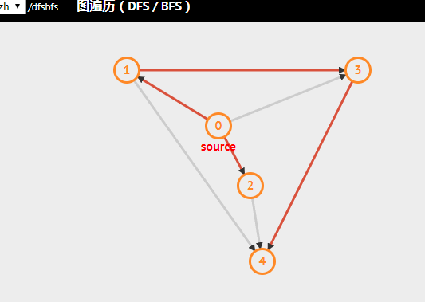
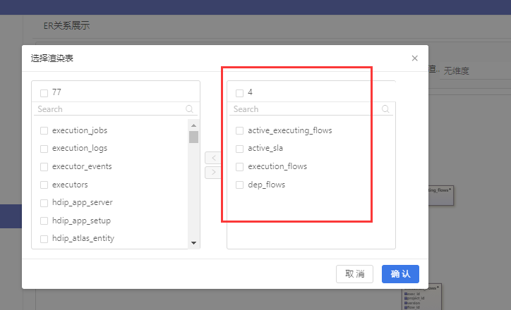
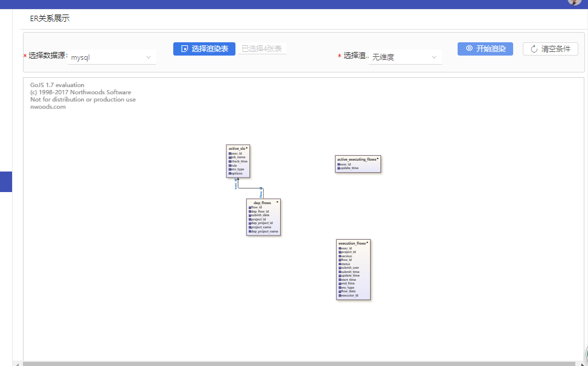
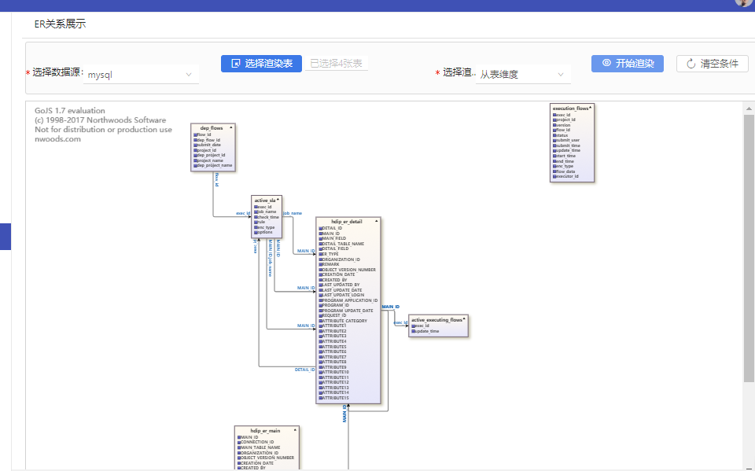
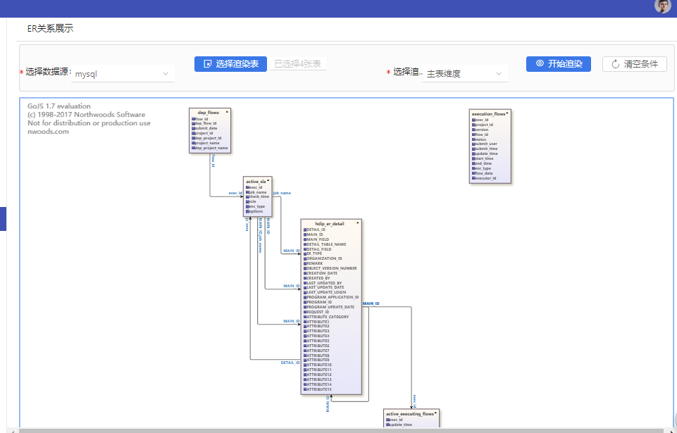

图，作为现实世界中的一种抽象数学概念，在诸多领域发挥重要的作用。如：地图，网页信息，电路，任务调度，商业交易，配对，计算机网络，软件。
本篇博文，就简单介绍下，图论中基础算法–广度优先搜索，在生成E-R关系图中的应用。

福利网址
开篇放个福利网址:https://visualgo.net/zh/dfsbfs 一个算法可视化的网址，可以在线看各种算法的可视化，做的也越来越专业，还是非商业性质网站。理解不了抽象概念时，结合动画辅助理解。
为啥不使用深度优先搜索？
在本例中，对搜索算法没有特殊要求，用深度优先搜索也是可以实现的，只是笔者凑巧使用了广度优先。
在一般情况下，深度优先搜索法占内存少但速度较慢，广度优先搜索算法占内存多但速度较快，在距离和深度成正比的情况下能较快地求出最优解。
BFS和DFS可能是知名度比较高的两种图搜索算法而已，实际上图搜索算法还有很多，能玩出不同的花样，所以理解算法并根据实际需要动态规划算法才是追求的方向。
广度优先搜索原理
算法目的
算法目的是系统地展开并检查图中的所有节点，以找寻结果。
算法思路伪实现
动作1.从图中某一顶点o开始，遍历o所能到达的点集合C，判断集合C中点是否为已遍历状态，若不是执行动作2，并把该点压入一个用作循环动作的队列q中，若是则不做处理；
动作2.把起点，和过程中已经遍历到的点，标记为已遍历状态；
循环动作：从队列q中压出点o2,把o2作为起点，执行动作1；
循环结束条件:队列q中无元素；
结果:所有的节点都会被访问到；
算法可视化
如下动图所示，从顶点0开始，广度优先遍历所有节点：

生成E-R图?

如图上所示，我们选择了其中4张表。
为此，提出以下三个问题：
问题1：任意给定N张表，如何显示这N张表之间的关联关系？
问题2：如何显示这N张表+这N张表的从属表之间，的关联关系？
问题3： 如何显示这N张表+从属表是这N张表的表，的关联关系？
分析
E-R图本质上是有向图；
维护好表间关系
要想展示E-R关系，首先，维护好表间关系，具体怎么维护，自行决定，不是本文重点；
建立有向图的程序模型
建立有向图的程序模型：Map<nodeString,List<trailingEdge>>
这里图省事，就把关系整理为Map数据结构，key为节点值，value为该节点的出边（出边为算法中有向图的概念，出边标识了起始节点和终点节点）；
问题1：任意给定N张表，如何显示这N张表之间的关联关系
问题1的解决方法：不需要搜索，取出这N张表的关系模型Map<nodeString,List<trailingEdge>>，
遍历出边trailingEdge，trailingEdge的终点节点不在Map中的，删除掉这条出边，当遍历完整个模型Map后，仅剩下这N个节点和它们的出边，返回给前台展示即可。
这个比较简单，我就不贴代码了，直接看效果图：

这里就选了四张需要渲染的表。
问题2：如何显示这N张表+这N张表的从属表之间，的关联关系
问题2的解决方法：如何显示这N张表+这N张表的从属表之间，的关联关系
这个问题难在 如何寻找这N张表的从属表，比如选定表A，如何在所有表中，寻找到表A的子表a1,以及子表的子表a11等等。
这就要在有向图中用广度优先搜索的方法，寻找到A表的子表，子子表。
即：在有向图中，寻找到A表可以到达到的表！
核心算法代码
/**
* 广度优先搜索从一个图形数据结构Map中 判断 节点 a 与 b 之间是否存在路径
*/
private boolean checkBFS(Map<String,List<HdipLinkData>> graphData, String a,String b) {
if (a.equals(b)) {
return true;
}
Queue<String> queue = new LinkedList<>();
//用来标记是否访问过该节点
HashMap<String, Boolean> visitedMap = new HashMap<>();
visitedMap.put(a, true);
queue.offer(a);
while (!queue.isEmpty()) {
String node = queue.poll();//从队列头部移除
List<HdipLinkData> edgeNode = graphData.get(node);
if (edgeNode.size()!=0)
for (HdipLinkData neighbor : edgeNode) {
String nextNode = neighbor.getToTableName();
if (!visitedMap.containsKey(nextNode)) {//如果没访问过
if (nextNode.equals(b)) {
return true;
}
visitedMap.put(nextNode, true);
queue.offer(nextNode);
}
}
}
return false;
}
如上，利用BFS算法，可以判断任意两个节点是否可以到达，是否连通。
具体实现细节，伪代码思路如下：
数据库共M张表，
选定了N张表，
未判定表集合Z=(M-N);
遍历这集合N(n){
遍历集合Z(z){
checkBFS(n,z);//是否可达
}
获得 表n可以到达到的表集合L,
那么Z=Z-L;
}
结束
获取目标表集合T = M-Z;
这个集合T就是我们的结果集合；
带着T 执行问题1的解决方法思路，返回结果给前台展示
最终成果图如下，这里还是选择了上图中的那四张表：

问题3：如何显示这N张表+从属表是这N张表的表，的关联关系
问题3实际上是问题2 的逆问题；
即：在有向图中，寻找到A表可以到达到的表的逆命题–：在有向图中，寻找可以到达A表的表！
代码不贴了，思路一样的，只是某些操作反过来想而已；
最终成果图如下，这里还是选择了上图中的那四张表，跟问题2的结果有点类似，实际上是不一样的：

干货也不是特别多 讲的专业一点 主要就是那段核心代码 去判断有向图中的两点可达性
以上 谢谢阅读